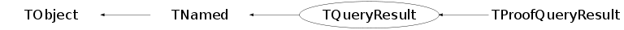

class TQueryResult: public TNamed
TQueryResult A container class for query results.
Function Members (Methods)
public:
| TQueryResult() | |
| TQueryResult(const TQueryResult&) | |
| virtual | ~TQueryResult() |
| void | TObject::AbstractMethod(const char* method) const |
| virtual void | TObject::AppendPad(Option_t* option = "") |
| virtual void | Browse(TBrowser* b = 0) |
| static TClass* | Class() |
| virtual const char* | TObject::ClassName() const |
| virtual void | TNamed::Clear(Option_t* option = "") |
| virtual TObject* | TNamed::Clone(const char* newname = "") const |
| virtual Int_t | TNamed::Compare(const TObject* obj) const |
| virtual void | TNamed::Copy(TObject& named) const |
| virtual void | TObject::Delete(Option_t* option = "")MENU |
| virtual Int_t | TObject::DistancetoPrimitive(Int_t px, Int_t py) |
| virtual void | TObject::Draw(Option_t* option = "") |
| virtual void | TObject::DrawClass() constMENU |
| virtual TObject* | TObject::DrawClone(Option_t* option = "") constMENU |
| virtual void | TObject::Dump() constMENU |
| virtual void | TObject::Error(const char* method, const char* msgfmt) const |
| virtual void | TObject::Execute(const char* method, const char* params, Int_t* error = 0) |
| virtual void | TObject::Execute(TMethod* method, TObjArray* params, Int_t* error = 0) |
| virtual void | TObject::ExecuteEvent(Int_t event, Int_t px, Int_t py) |
| virtual void | TObject::Fatal(const char* method, const char* msgfmt) const |
| virtual void | TNamed::FillBuffer(char*& buffer) |
| virtual TObject* | TObject::FindObject(const char* name) const |
| virtual TObject* | TObject::FindObject(const TObject* obj) const |
| Long64_t | GetBytes() const |
| virtual Option_t* | TObject::GetDrawOption() const |
| static Long_t | TObject::GetDtorOnly() |
| TDatime | GetEndTime() const |
| Long64_t | GetEntries() const |
| Long64_t | GetFirst() const |
| virtual const char* | TObject::GetIconName() const |
| Float_t | GetInitTime() const |
| TList* | GetInputList() |
| TObject* | GetInputObject(const char* classname) const |
| const char* | GetLibList() const |
| TMacro* | GetLogFile() const |
| virtual const char* | TNamed::GetName() const |
| Int_t | GetNumWrks() const |
| virtual char* | TObject::GetObjectInfo(Int_t px, Int_t py) const |
| static Bool_t | TObject::GetObjectStat() |
| virtual Option_t* | TObject::GetOption() const |
| const char* | GetOptions() const |
| TList* | GetOutputList() |
| const char* | GetParList() const |
| Float_t | GetProcTime() const |
| const char* | GetResultFile() const |
| TMacro* | GetSelecHdr() const |
| TMacro* | GetSelecImp() const |
| Int_t | GetSeqNum() const |
| TDatime | GetStartTime() const |
| TQueryResult::EQueryStatus | GetStatus() const |
| virtual const char* | TNamed::GetTitle() const |
| virtual UInt_t | TObject::GetUniqueID() const |
| Float_t | GetUsedCPU() const |
| virtual Bool_t | TObject::HandleTimer(TTimer* timer) |
| virtual ULong_t | TNamed::Hash() const |
| virtual void | TObject::Info(const char* method, const char* msgfmt) const |
| virtual Bool_t | TObject::InheritsFrom(const char* classname) const |
| virtual Bool_t | TObject::InheritsFrom(const TClass* cl) const |
| virtual void | TObject::Inspect() constMENU |
| void | TObject::InvertBit(UInt_t f) |
| virtual TClass* | IsA() const |
| Bool_t | IsArchived() const |
| virtual Bool_t | IsDone() const |
| Bool_t | IsDraw() const |
| virtual Bool_t | TObject::IsEqual(const TObject* obj) const |
| Bool_t | IsFinalized() const |
| virtual Bool_t | TObject::IsFolder() const |
| Bool_t | TObject::IsOnHeap() const |
| virtual Bool_t | TNamed::IsSortable() const |
| Bool_t | TObject::IsZombie() const |
| virtual void | TNamed::ls(Option_t* option = "") const |
| Bool_t | Matches(const char* ref) |
| void | TObject::MayNotUse(const char* method) const |
| virtual Bool_t | TObject::Notify() |
| void | TObject::Obsolete(const char* method, const char* asOfVers, const char* removedFromVers) const |
| static void | TObject::operator delete(void* ptr) |
| static void | TObject::operator delete(void* ptr, void* vp) |
| static void | TObject::operator delete[](void* ptr) |
| static void | TObject::operator delete[](void* ptr, void* vp) |
| void* | TObject::operator new(size_t sz) |
| void* | TObject::operator new(size_t sz, void* vp) |
| void* | TObject::operator new[](size_t sz) |
| void* | TObject::operator new[](size_t sz, void* vp) |
| TQueryResult& | operator=(const TQueryResult&) |
| virtual void | TObject::Paint(Option_t* option = "") |
| virtual void | TObject::Pop() |
| virtual void | Print(Option_t* opt = "") const |
| virtual Int_t | TObject::Read(const char* name) |
| virtual void | TObject::RecursiveRemove(TObject* obj) |
| void | TObject::ResetBit(UInt_t f) |
| virtual void | TObject::SaveAs(const char* filename = "", Option_t* option = "") constMENU |
| virtual void | TObject::SavePrimitive(ostream& out, Option_t* option = "") |
| void | TObject::SetBit(UInt_t f) |
| void | TObject::SetBit(UInt_t f, Bool_t set) |
| virtual void | TObject::SetDrawOption(Option_t* option = "")MENU |
| static void | TObject::SetDtorOnly(void* obj) |
| virtual void | TNamed::SetName(const char* name)MENU |
| virtual void | TNamed::SetNameTitle(const char* name, const char* title) |
| static void | TObject::SetObjectStat(Bool_t stat) |
| virtual void | TNamed::SetTitle(const char* title = "")MENU |
| virtual void | TObject::SetUniqueID(UInt_t uid) |
| virtual void | ShowMembers(TMemberInspector& insp) |
| virtual Int_t | TNamed::Sizeof() const |
| virtual void | Streamer(TBuffer& b) |
| void | StreamerNVirtual(TBuffer& b) |
| virtual void | TObject::SysError(const char* method, const char* msgfmt) const |
| Bool_t | TObject::TestBit(UInt_t f) const |
| Int_t | TObject::TestBits(UInt_t f) const |
| virtual void | TObject::UseCurrentStyle() |
| virtual void | TObject::Warning(const char* method, const char* msgfmt) const |
| virtual Int_t | TObject::Write(const char* name = 0, Int_t option = 0, Int_t bufsize = 0) |
| virtual Int_t | TObject::Write(const char* name = 0, Int_t option = 0, Int_t bufsize = 0) const |
protected:
| TQueryResult(Int_t seqnum, const char* opt, TList* inlist, Long64_t entries, Long64_t first, const char* selec) | |
| void | AddInput(TObject* obj) |
| void | AddLogLine(const char* logline) |
| TQueryResult* | CloneInfo() |
| virtual void | TObject::DoError(int level, const char* location, const char* fmt, va_list va) const |
| void | TObject::MakeZombie() |
| virtual void | RecordEnd(TQueryResult::EQueryStatus status, TList* outlist = 0) |
| void | SaveSelector(const char* selec) |
| void | SetArchived(const char* archfile) |
| virtual void | SetFinalized() |
| virtual void | SetInputList(TList* in, Bool_t adopt = kTRUE) |
| virtual void | SetOutputList(TList* out, Bool_t adopt = kTRUE) |
| virtual void | SetProcessInfo(Long64_t ent, Float_t cpu = 0., Long64_t siz = -1, Float_t inittime = 0., Float_t proctime = 0.) |
Data Members
public:
| enum EQueryStatus { | kAborted | |
| kSubmitted | ||
| kRunning | ||
| kStopped | ||
| kCompleted | ||
| }; | ||
| enum TObject::EStatusBits { | kCanDelete | |
| kMustCleanup | ||
| kObjInCanvas | ||
| kIsReferenced | ||
| kHasUUID | ||
| kCannotPick | ||
| kNoContextMenu | ||
| kInvalidObject | ||
| }; | ||
| enum TObject::[unnamed] { | kIsOnHeap | |
| kNotDeleted | ||
| kZombie | ||
| kBitMask | ||
| kSingleKey | ||
| kOverwrite | ||
| kWriteDelete | ||
| }; |
protected:
| Bool_t | fArchived | whether the query has been archived |
| Long64_t | fBytes | number of bytes processed |
| Bool_t | fDraw | true if draw action query |
| TDatime | fEnd | time when processing ended |
| Long64_t | fEntries | number of entries processed |
| Bool_t | fFinalized | whether Terminate has been run |
| Long64_t | fFirst | first entry processed |
| Float_t | fInitTime | Initialization time (seconds) (millisec precision) |
| TList* | fInputList | input list; contains also data sets, entry list, ... |
| TString | fLibList | blank-separated list of libs loaded at fStart |
| TMacro* | fLogFile | file with log messages from the query |
| TString | TNamed::fName | object identifier |
| Int_t | fNumWrks | Number of workers at start |
| TString | fOptions | processing options + aclic mode (<opt>#<aclic_mode>) |
| TList* | fOutputList | output list |
| TString | fParList | colon-separated list of PAR loaded at fStart |
| Float_t | fProcTime | Processing time (seconds) (millisec precision) |
| TString | fResultFile | URL of the file where results have been archived |
| TMacro* | fSelecHdr | selector header file |
| TMacro* | fSelecImp | selector implementation file |
| Int_t | fSeqNum | query unique sequential number |
| TDatime | fStart | time when processing started |
| TQueryResult::EQueryStatus | fStatus | query status |
| TString | TNamed::fTitle | object title |
| Float_t | fUsedCPU | real CPU time used (seconds) |
Class Charts
{kind=link}
{kind=link}
{kind=link}
{kind=link}

Function documentation
TQueryResult(Int_t seqnum, const char* opt, TList* inlist, Long64_t entries, Long64_t first, const char* selec)
Main constructor.
TQueryResult * CloneInfo()
Return an instance of TQueryResult containing only the local info fields, i.e. no outputlist, liblist, dset, selectors, etc.. Used for fast retrieve of information about existing queries and their status.
void SaveSelector(const char* selec)
Save the selector header and implementation into the dedicated TMacro instances. The header is searched for in the same directory of the implementation file.
void SetProcessInfo(Long64_t ent, Float_t cpu = 0., Long64_t siz = -1, Float_t inittime = 0., Float_t proctime = 0.)
Set processing info.
void SetInputList(TList* in, Bool_t adopt = kTRUE)
Set / change the input list. The flag 'adopt' determines whether the list is adopted (default) or cloned. If adopted, object ownership is transferred to this object. The internal fInputList will always be owner of its objects.
void SetOutputList(TList* out, Bool_t adopt = kTRUE)
Set / change the output list. The flag 'adopt' determines whether the list is adopted (default) or cloned. If adopted, object ownership is transferred to this object. The internal fOutputList will always be owner of its objects.
TObject * GetInputObject(const char* classname) const
Return first instance of class 'classname' in the input list. Usefull to access TDSet, TEventList, ...
TQueryResult(Int_t seqnum, const char* opt, TList* inlist, Long64_t entries, Long64_t first, const char* selec)